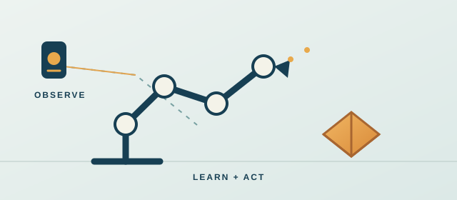
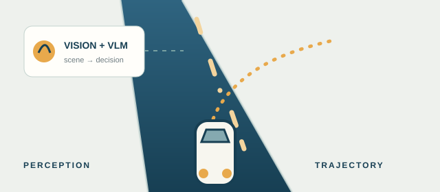
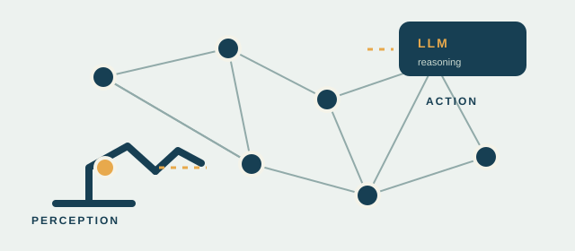

01
Embodied intelligence
& robot learning
Learning and deploying visuomotor policies for manipulation, mobile grasping, and long-horizon tasks.
RESEARCHER · ROBOTICS · EMBODIED AI
I build intelligent machines that can perceive, reason, and act in complex real-world environments.
01 / ABOUT
I am an undergraduate student in Intelligent Manufacturing at the School of Mechanical and Power Engineering, East China University of Science and Technology (ECUST).
My work sits at the intersection of robotics, machine learning, and mechanical systems. I am especially interested in making robots more capable in open-ended settings: understanding imperfect observations, planning with prior knowledge, and learning policies that transfer beyond a single environment.
02 / RESEARCH
Research themes I am currently exploring through projects, experiments, and system building.

Learning and deploying visuomotor policies for manipulation, mobile grasping, and long-horizon tasks.

Building interpretable, style-aware end-to-end driving systems with vision-language models and reinforcement learning.

Combining multimodal perception, LLM reasoning, motion primitives, and domain adaptation for reliable machines.
03 / PUBLICATIONS
Selected publications and accepted work. Author names are shown in publication order.
CONFERENCE PAPER · ACCEPTED
The 8th International Conference on Intelligent Robotics and Control Engineering (IRCE 2025)
Accepted for publication and oral presentation. The work integrates multimodal perception, spacecraft-structure knowledge, and LLM-guided heuristic planning.
CONFERENCE PAPER · ACCEPTED
10th Asia Conference on Mechanical Engineering and Aerospace Engineering (MEAE 2024)
Accepted for publication and presentation. The framework combines TS2Vec, CNN, TCN, Transformer, and transferable domain adaptation.
JOURNAL PAPER · FORTHCOMING
《自动化技术与应用》 · accepted for publication
A five-link wheel-legged robot using an LQR–VMC hybrid control strategy for dynamic balance in unstructured environments.
04 / EXPERIENCE
Reproduced ACT, Diffusion Policy, and PI05 on OpenArm; developed control, data collection, and teleoperation pipelines. Achieved a 92% task success rate on a bimanual trash-disposal demo and explored Cosmos Policy and Casual MOMA.
Designed a style-aware VLM and hierarchical end-to-end driving system with a dual-MoE architecture, diffusion trajectory generation, and GRPO-based adaptive optimization.
Developed motion primitives, adaptive search, YOLOv8-based perception, and LLM expert reasoning for non-cooperative spacecraft operations under partial visibility.
Led electrical design for two robots, including CAN motor control, UART communication, MATLAB-based linkage-arm deployment, and competition integration. Won a national second prize in a single event and a national third prize overall.
05 / HONORS
National First Prize
Bochuang Cup Embedded Design Competition
National Second & Third Prizes
ROBOCON Robot Competition
National Third Prize
Intelligent Unmanned Systems Challenge
National Encouragement Scholarship
Outstanding Student & Student Leader